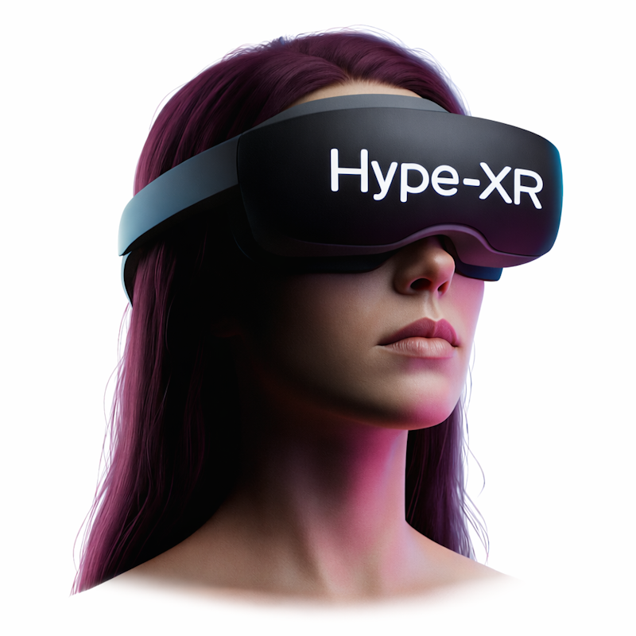
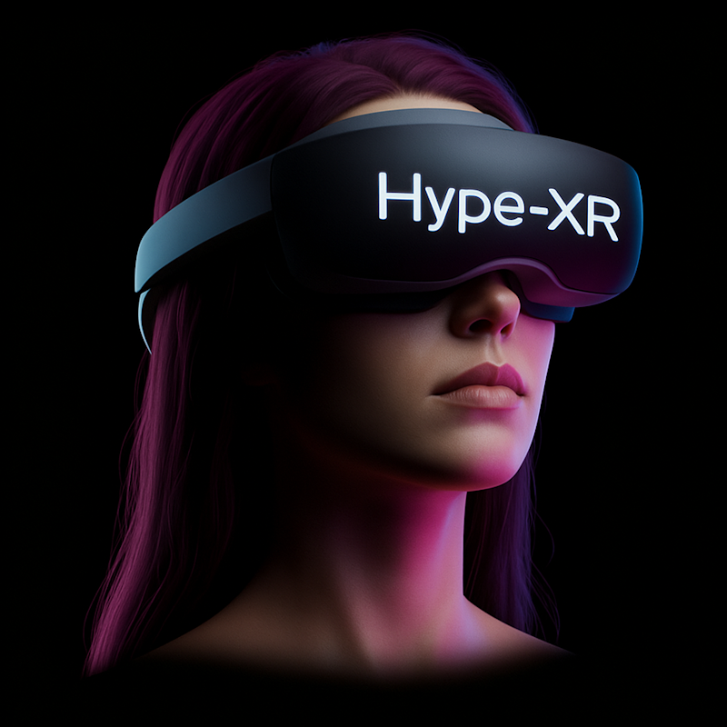

1st Workshop on
Hyperrealism in XR
in the Era of Radiance Fields
Co-located with IEEE ISMAR 2026
Description
Recent advances in radiance-field rendering — 3D Gaussian Splatting (3DGS) [1] and Neural Radiance Fields (NeRF) [2] — together with generative 3D world models (e.g. World Labs Marble), have made photorealistic captured and synthesized 3D content broadly accessible. As photorealism becomes a commodity rather than a technical milestone, the XR community faces a new question: which aspects of realism actually matter for human experience? [3]
The 1st Workshop on Hyperrealism in XR (Hype-XR) focuses on this shift from asset-level realism to perception-level realism. Unlike VR, mixed and augmented reality (MR/AR) places virtual content directly alongside the physical world, making coherence with the real scene — not just per-pixel fidelity — the central challenge. We ask: when, how, for what purpose, and why should we bring photorealistic assets into MR/AR, and how should we evaluate the result? And what ethical concerns arise as the line between virtual and physical realities blurs?
References
- [1] B. Kerbl, et al., "3D Gaussian Splatting for Real-time Radiance Field Rendering," ACM TOG, 42:1--14, 2023.
- [2] B. Mildenhall, et al., "NeRF: Representing Scenes as Neural Radiance Fields for View Synthesis," Proc. ECCV, 2020.
- [3] K. Li, et al., "Radiance fields in XR: A Survey on How Radiance Fields are Envisioned and Addressed for XR Research," IEEE TVCG, 2025.
Topics: We invite technical papers that develop methods for controllable, perceptually meaningful realism, and position or application papers that examine how realism should be defined, evaluated, and deployed once photorealistic scans are no longer the bottleneck. Topics include, but are not limited to:
- Perception of hyperrealism in MR/AR: presence, plausibility, conviction of reality, the uncanny, and perceptual artifacts in mixed scenes.
- Evaluation and standardization: moving beyond PSNR / SSIM / LPIPS toward perceptual and task-based metrics, benchmarks, and datasets for XR.
- Critical and ethical perspectives: does higher fidelity equal better MR/AR? deception risks, privacy of captured scenes, and psychological safety.
- Capture, rendering, generation, and editing: radiance fields (3DGS, NeRF) and generative 3D, real-time rendering and streaming on HMDs, relighting, and authoring workflows.
Contribute
We invite contributions through two tracks. All submissions are encouraged to engage the workshop's framing question — when, how, for what purpose, and why should we bring photorealistic assets into MR/AR?
- Short papers (archival): Original research, surveys, demos, or position papers, up to 6 pages excluding references, in the IEEE Computer Society VGTC conference format. Anonymous submissions undergo formal review (two reviews per paper). Accepted papers appear in the ISMAR 2026 Adjunct Proceedings on IEEE Xplore.
- Research pitches (non-archival): Extended abstracts (1–2 pages) for 3-minute lightning talks on work in progress. Lightly reviewed by the organizers; not published on IEEE Xplore. Strongly encouraged for early-stage academic and industry contributions.
Important dates (provisional, aligned with the ISMAR 2026 workshop track). All deadlines are 23:59:59 AoE (Anywhere on Earth, UTC−12) on the stated day.
- Short paper submission: July 5, 2026 July 12, 2026 (closed)
- Notification of acceptance: July 17, 2026 (sent — see papers in the program)
- Camera-ready materials: July 31, 2026 (closed)
- Research-pitch abstract submission: September 4, 2026 (closed)
- Research-pitch notification: September 18, 2026 (sent — see pitches in the program)
- Workshop: October 6 (Tue) 2026, 14:00–17:45 (Room Seizone 1, Bari, Italy / hybrid — see program)
Keynote Speaker
Tentative talk: Hyperrealism from the perspective of historical artifacts and literature
Prof. Dickhaut will open the workshop with a cross-disciplinary perspective on how realism is perceived and contextualized, framing Hype-XR's central question of perception-level realism in XR.
Program
-
14:00-14:05Welcome and Framing
-
14:05-14:50Keynote (45 min)University of Stuttgart, GermanyHyperrealism from the perspective of historical artifacts and literature
-
14:50-15:30Paper Session I: Realism in Virtual Humans (3 × 12 min incl. Q&A)01Realism in Virtual Humans: From Fidelity to Human Responses02Comparing 3D Gaussian Splatting and Cartoon Style for Intelligent Avatars in Virtual Reality Interactions03Does Avatar PhotoRealism Enhance Social Presence? Comparing Captured vs. Crafted Models
-
15:30-16:15☕ Coffee Break & Captured-Reality Demos (45 min)
-
16:15-16:40Paper Session II: Captured Places (2 × 12 min incl. Q&A)043D Gaussian Splatting and Mesh-Based Digital Twins: An Exploratory Study for Virtual Reality Tourism05TeleportAR: Simulating Teleportation in Augmented Reality Through Digital Models
-
16:40-16:50Research-Pitch Lightning Talks (2 × 3 min + Q&A)P1In Space, No One Will Hear You Fall: Microgravity Bouldering via 3D Gaussian Splatting and Movement CataloguingP2Towards Efficient XR Visualization of Porous Materials via 3D Gaussian Splatting
-
16:50-17:05Structured Pro/Contra Breakouts (15 min)Small groups argue for and against hyperrealism in MR/AR; each group's strongest arguments feed directly into the panel.
-
17:05-17:35Panel Discussion (30 min)"Does higher fidelity always mean better MR/AR?"
-
17:35-17:45Wrap-up, Next Steps & Group Photo
Panel Discussion
Organizers